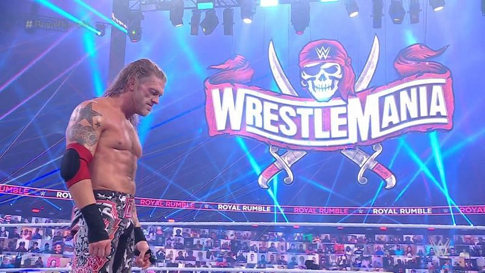
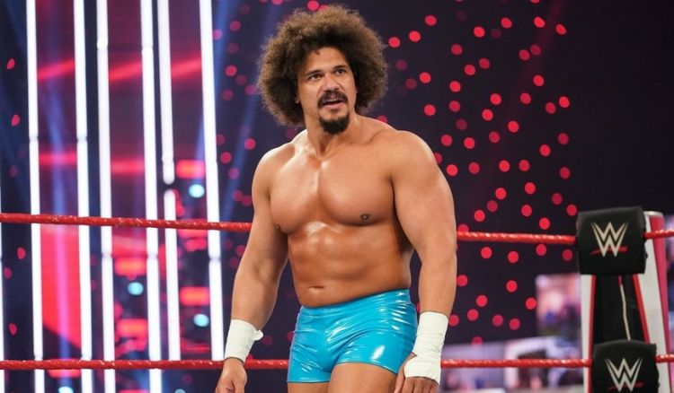
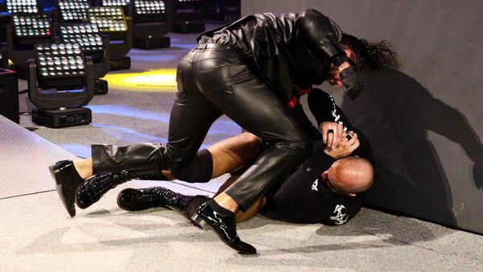
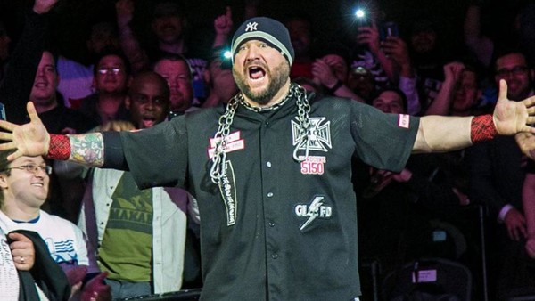

News
Edge is the Men's Royal Rumble Winner 2021!
WWE superstar Edge added another glorious chapter to his comeback story after winning the men's Royal Rumble match from the number one position.
Edge was announced as the number 2 entrant on the WWE Backstage special Saturday night, but the Rumble was once again amended for Edge to start as the number 1 entrant. Edge last eliminated 'The Viper' Randy Orton, who spent the majority of the match selling a knee injury backstage before returning at the end.
WWE Championship Match in the Elimnation Chamber
Drew McIntyre is facing an uphill climb to remain the WWE champion going into WrestleMania 37. Shane McMahon and Adam Pearce announced McIntyre will put the title on the line in an Elimination Chamber match at the pay-per-view of the same name Feb. 21. His opponents will be five former world champions: Randy Orton, Jeff Hardy, AJ Styles, The Miz and Sheamus.
With the assist from @shanemcmahon, @ScrapDaddyAP is putting THESE 6️⃣ Superstars inside the Elimination Chamber for the #WWEChampionship:
— WWE (@WWE) February 9, 2021
⛓ @DMcIntyreWWE
⛓ @RandyOrton
⛓ @JEFFHARDYBRAND
⛓ @AJStylesOrg
⛓ @mikethemiz
⛓ @WWESheamus#WWERaw #WWEChamber pic.twitter.com/XbbbNRm51s
Carlito Uncertain on his WWE Future
Carlito has admitted he is unsure whether he has a future in WWE, after making a surprise return at the 2021 Royal Rumble. Carlito appeared on WWE programming for the first time in ten years at the 2021 pay-per-view event, having been released by the company in 2010 for first violation of the WWE Wellness Program and his subsequent refusal to attend a rehabilitation facility. The 41-year-old admitted his departure from WWE had left a bitter taste in his mouth and he was excited to have the opportunity to reappear last month, and make amends for the wrongs from a decade ago.
Seth Rollins BRUTALLY Assaults Cesaro During WWE SmackDown Return
The 'Messiah' has returned! Seth Rollins made his first appearance on regular WWE TV since before Survivor Series 2020 on last night's episode of SmackDown. At first, Rollins appeared to be a new man - he used the birth of his first child alongside Becky Lynch as an example of how he had changed. Of course, it was all a ruse. Seth then launched into a verbal attack on the watching SmackDown roster and said they needed a leader who could guide them on the proper path. That naturally led to walkouts from those who have heard it all before. When Rollins spotted Cesaro (who was one of the last to leave) walking away, he darted from the ring and viciously attacked him. Moments later, Daniel Bryan rushed to the Swiss star's aid and helped fend Rollins off. It appears that Seth will feud with both Cesaro and Bryan, which should lead to some tasty, tasty matches over the next few months.
WWE Legend Calls Raw's Lana "A Complete Pro"
Bully Ray thinks people need to show Lana some more respect.

The WWE Hall Of Famer lavished compliments on the Raw star via his 'Busted Open Radio' show, and said everyone needs to realise how hard she's working to improve in-ring. That's not something Ray believes should ever be taken for granted, especially when Lana probably doesn't have to become a top-tier worker anyway.
Bully noted that Lana will likely never be as good as talents like Becky Lynch, Charlotte Flair, Bayley or Sasha Banks, but he loves that she puts a shift in and "invests time in her profession". Ray is also impressed that Lana "never [looks] boo-boo faced about anything" WWE ask her to do during segments and matches.
Confirmed Matches for NXT: Vengence Day
Sunday the 14th is set to host the NXT Pay-Per-View Vengence Day
Confirmed Matches so far are:
| Io Sharai(c) vs. Toni Storm vs Mercedes Martinez | Triple Threat match for the NXT Women's Title |
|---|---|
| Dakota Kai & Raquel Gonzalez vs. Ember Moon & Shotzi Blackheart | Women's Dusty Cup finals |
| MSK vs. The Grizzled Young Veterans | Men's Dusty Cup finals |
| Finn Balor (c) vs. Pete Dunne | Single's match for the NXT Championship |
| Johnny Gargano (c) vs. Kushida | Singles match for the NXT North American Championship |
Where to watch:
7pm ET Sunday the 14th of Febuary /12am GMT Monday the 15th of Febuary
Watch exclusively on the WWE Network
Card subject to change.
Theme song for Vengence 2021